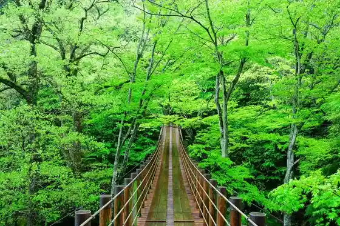
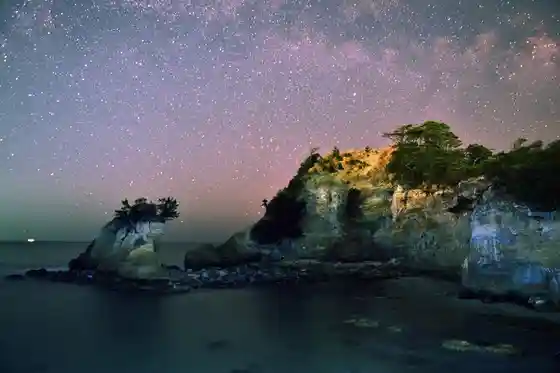
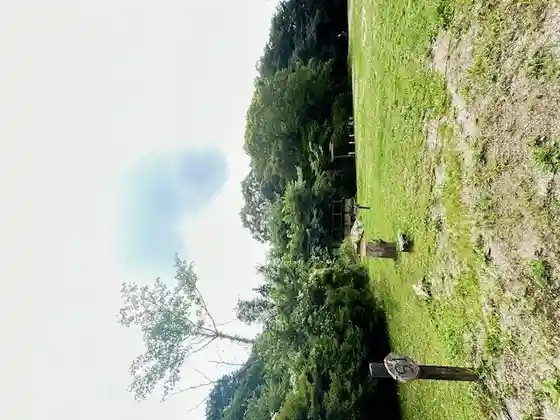

Hananuki Gorge
Takahagi, Ibaraki · Official / source link

Taka Ko Obama Coast
Takahagi, Ibaraki · Official / source link

Takahagi Beach
Takahagi, Ibaraki · 0293-23-2121 · Official / source link
Takahagi Fureai no Sato Fisshingueria
Takahagi, Ibaraki · 0293-28-0814 · Official / source link

Takahagi Yama Baths
Takahagi, Ibaraki · 0293-23-0126 · Official / source link
Hananuki Furutsu Hozuki (Hananuki Furutsu Hozuki Kurabu)
Takahagi, Ibaraki · 090-1606-5348 · Official / source link
Otaki Sawa Campground
Takahagi, Ibaraki · 0293-23-7316 · Official / source link
JA Hitachi Takahagi Nosambutsu Chokubai Tokoro
Takahagi, Ibaraki · 0293-22-3008 · Official / source link
Sakura Uchu Park (Takahagi Eisei Tsushin Memorial Park)
Takahagi, Ibaraki · Official / source link
Hozumi Ie House
Takahagi, Ibaraki · 0293-24-0919 · Official / source link
Tenku no Niwa Tenma Yume
Takahagi, Ibaraki · 0293-27-3900 · Official / source link
Joko Gei Art Museum
Takahagi, Ibaraki · 0293-22-5066 · Official / source link
Akahama Coast
Takahagi, Ibaraki · 0293-23-7316 · Official / source link
Hagi Village (Hagi Birejji)
Takahagi, Ibaraki · Official / source link
Meiba Satogafuchi
Takahagi, Ibaraki · 0293-23-2121 · Official / source link
Hananuki Dam
Takahagi, Ibaraki · 0293-23-7316 · Official / source link
Yamato Forest Takahagi Sukautofiirudo
Takahagi, Ibaraki · 0293-44-3551 · Official / source link
Seiryu no Sato Hananuki Bussan Center
Takahagi, Ibaraki · 0293-28-0808 · Official / source link
Garden Miso Kura Tatsugo Miso
Takahagi, Ibaraki · 0293-23-5222 · Official / source link
Horai Natto Furusato Jiman (Morita Toshio Shoten)
Takahagi, Ibaraki · 0293-22-2220 · Official / source link
Hananuki Sakura Park
Takahagi, Ibaraki · 0293-23-7316 · Official / source link
Hananuki Furusato Nature Park Center Campground
Takahagi, Ibaraki · 0293-24-2331 · Official / source link
Megane Hashi (Hananuki Kawa Daiichi Hatsudensho Daisan Go Suiro Hashi)
Takahagi, Ibaraki · Official / source link
Matsu Iwa Tera
Takahagi, Ibaraki · Official / source link
Keyaki Taira Campground
Takahagi, Ibaraki · Official / source link
Yachiyo Okoshi Takahagi Sembei (Nagatoshi Do)
Takahagi, Ibaraki · 293-22-2002 · Official / source link
Taka Ko Miso (Imagawa Miso Mise)
Takahagi, Ibaraki · 0293-22-4572 · Official / source link
Otome Taki Fudo Taki
Takahagi, Ibaraki · Official / source link
Takahagi Yufiirudo
Takahagi, Ibaraki · 0293-28-0071 · Official / source link
Jijisugi Borupen (Yumemi Ru Dogu Tsuruya)
Takahagi, Ibaraki · 0293-22-2414 · Official / source link
Taka Tomae Hama Coast
Takahagi, Ibaraki · Official / source link
Hananuki Yuzu Miso (Furudokei)
Takahagi, Ibaraki · Official / source link
Takiyama Gorge
Takahagi, Ibaraki · Official / source link
Takahagi Hozuki (Ketsu no Mi WORKS)
Takahagi, Ibaraki · 090-5203-1092 · Official / source link
Manyo no Michi
Takahagi, Ibaraki · Official / source link
Koamigame
Takahagi, Ibaraki · 080-7557-0127 · Official / source link
Hagimaro Kukkii (NPO Uisshu Happii Beru)
Takahagi, Ibaraki · 0293-22-2999 · Official / source link
Folk History Museum
Takahagi, Ibaraki · 0293-23-7229 · Official / source link
Matsuoka Joshi (Apurochi Plaza)
Takahagi, Ibaraki · Official / source link